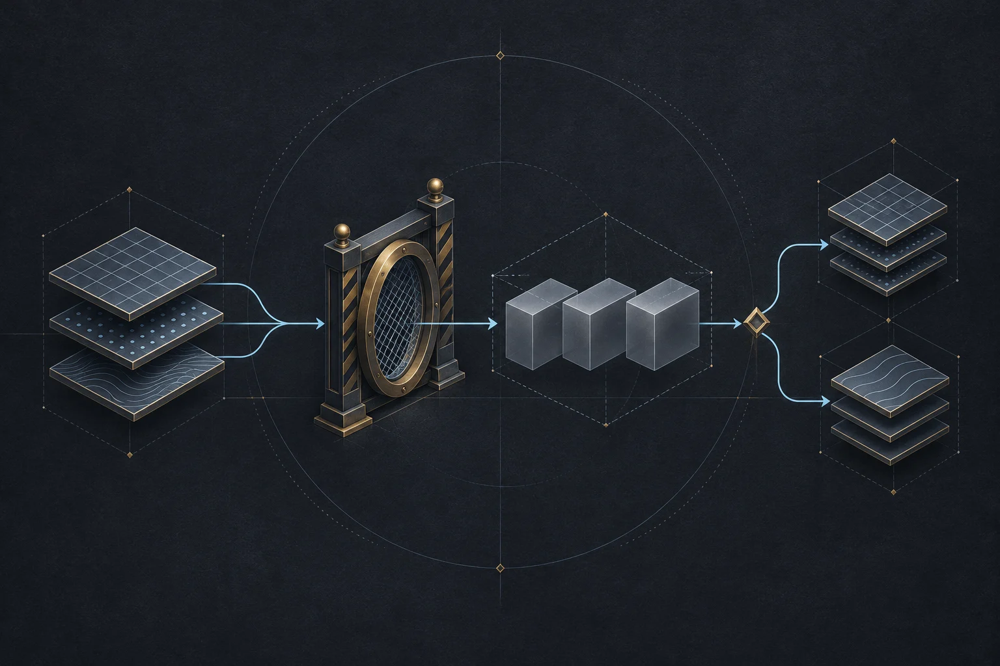

01What I built
I designed a repeatable way to refresh development and staging from production-safe snapshots. The workflow sequences data scrubbing and the system refresh across DynamoDB and OpenSearch.
02What it enables
The same refresh procedure can be repeated without hand-rebuilding each environment.
03Tools & methods